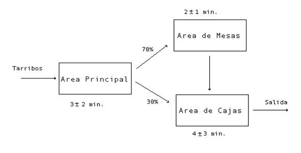
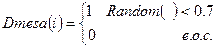
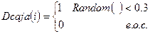

Veamos como resolver un problema sencillo de simulación, desarrollaremos la simulación del Banco de Esperanza para el caso mas elemental: una caja y una mesa, como sigue:

Variables a Considerar:
i: usuario i-ésimo que entra al banco
Tarribos: Tiempo que transcurre entre la llegada de un usuario y otro, para el primer usuario Tarribo=0.
Mllegada: Momento de llegada al banco
Dmesa: % de personas que deciden ir a mesa
Dcaja: % de personas que deciden ir a caja
Tesperamesa: tiempo de espera en mesa
Tesperacaja: tiempo de espera en caja
Tmesa: tiempo de trabajo en mesa
Tcaja: tiempo de trabajo en caja
Ncolamesa: Cola de la mesa
Ncolacaja: Cola de la caja
Msalidamesa: Momento de salida de la mesa
Msalidacaja: Momento de salida de la caja
Tiempototal: Tiempo total de permanencia en el Banco
Hay que suponer que en la mesa y en la caja se pueden formar colas, usaremos orden FIFO (First In First Out), esto nos hace pensar en las variables tiempo de espera en mesa, tiempo de espera en caja, también se habla de tiempo de servicio en ambos lugares.
Hemos definido la Simulación como un problema de experimentación y no de optimización, es por ello que en este caso sería bueno pensar en diferentes alternativas de trabajo y comparar los tiempos de permanencia en el banco en cada una.
En principio se piensa en tres alternativas:
1. La que se planteo en el problema original.
2. Hacer una reducción del tiempo de personas que necesitan ir a mesa.
3. Eliminar las mesas.
En cada una de las alternativas hay que analizar como se va hacer la recolección y análisis de datos, esto puede incluir poner un cronometro midiendo el tiempo interarribos, se puede suponer que este tiempo se distribuye uniforme 3 ± 2 minutos, o sea Tarribos ~ Uniforme (1,5).
En la alternativa original Dmesa ~ Bernoulli (0.7) y Dcaja ~ Bernoulli (0.3).
El tiempo de trabajo en la mesa y en la caja se puede estudiar lo que significa hacer mediciones por ejemplo, días distintos durante una semana y probar que se ajustan a determinada distribución, supongamos que: Tmesa ~ Uniforme (1,3) y Tcaja ~ Uniforme (1,7).
Por ejemplo si se trabaja en la alternativa que elimina todas las mesas, hay que hacer un ensayo del banco sin mesas, al menos un día para poder estudiar el comportamiento del Banco en esta situación, si se trabaja en la alternativa que plantea reducir el porciento de personas que deben usar la mesa, hay que estudiar estas proporciones, por ejemplo que un 35 % de las personas visite las mesas.
Aquí hay que tener en cuenta las variables que se van a “medir” y las que se van a calcular, todo antes de empezar a programar.
Por lo que hemos visto hasta ahora unas variables se generan y otras se calculan, veamos como calcular estas variables:
Variables relacionadas con la mesa:

Ncolamesa: cantidad de personas que están en la cola de la mesa cuando llega a ella el usuario i. Esto se puede calcular como la cantidad de personas anteriores al usuario i cuyo tiempo de salida de la mesa es mayor que el momento de llegada del usuario i.
Variables relacionadas con la caja:

Ncolacaja: cantidad de personas que están en la cola de la caja cuando llega a ella el usuario i. Esto se puede calcular como la cantidad de personas anteriores al usuario i cuyo tiempo de salida de la caja es mayor que el momento de llegada del usuario I a la caja. Obsérvese que al final todos los usuarios pasan por la caja, ya sea directamente o que salen de mesa.
1. Realizando la simulación de esta forma se presentan algunas dificultades, por ejemplo no es cierto que la disciplina de las colas sea siempre FIFO, no es cierto que el usuario antes que yo sea el último en caja, pues puede suceder que el usuario i -1 llegue primero que yo a caja si él decidió no ir a mesa, por otra parte el esquema de cálculo que es válido en mesa no necesariamente lo es en caja.
2. En el esquema de simulación visto se trata por separado la mesa de la caja, como si fueran bloques diferentes, primero se trató todo lo relacionado con la mesa y después todo lo relacionado con la caja, en la práctica se sabe que esto no ocurre exactamente así. Todo este proceso se complica notablemente si existiera un ciclo. De ahí que sea necesario estudiar otras estrategias de simulación.